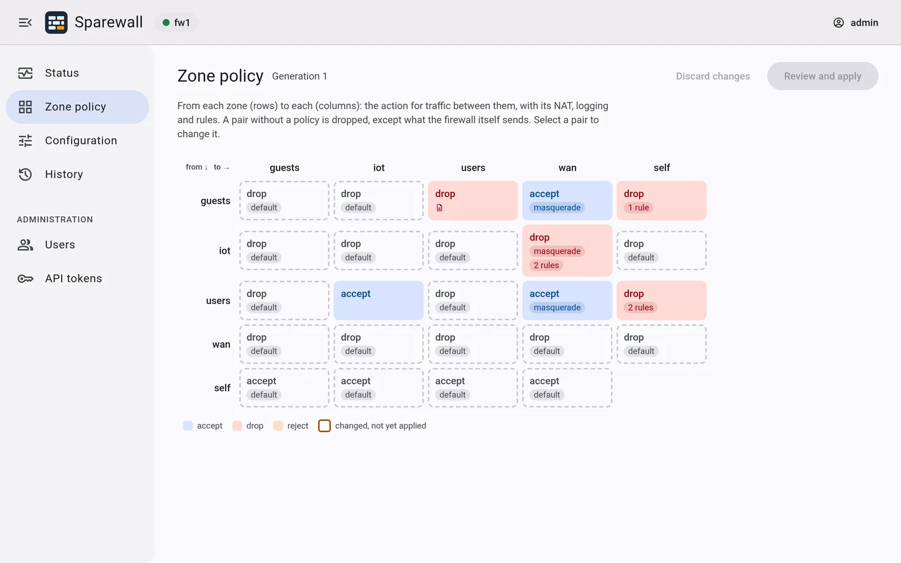
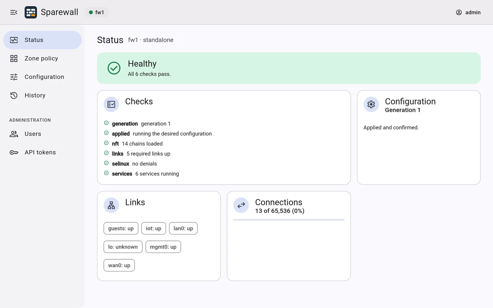
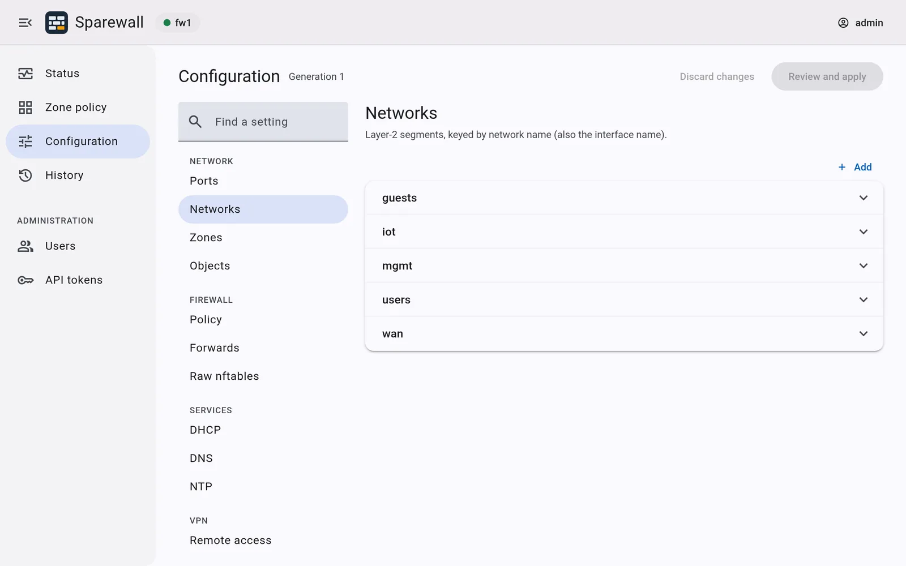

One document.
One image.
One node or a pair.
Sparewall is an open-source, image-based Linux firewall. Describe the whole deployment in one versioned document; every change is validated, applied atomically, and rolled back unless you confirm it. Drive it from the CLI, the HTTP API or, from 0.3.0, a web UI.
Inside a Sparewall pair
- Zone-based firewall. Write policy between zones; nftables enforces it, and anything not allowed is dropped.
- Designed for failover. A pair shares the gateway address. If the active node fails, the standby takes over and connections carry on.
- Secure by default. An immutable, signed bootc image, internal services written in Rust, and node-to-node traffic only over WireGuard.
- DHCP and DNS in containers. ISC Kea and Unbound run as containers, pinned by digest.
- WireGuard VPN for remote users. Peers are entries in the document, and the VPN is a zone like any other.
- Metrics and backups. Prometheus metrics for rules, connections, links and health, and encrypted configuration backups with restic.
- API-driven. The CLI, your scripts and the web UI all drive the same API. The web UI stays off until you turn it on.
A firewall you can reason about
Sparewall treats a firewall like any other piece of infrastructure: declared, versioned, reviewable, and safe to change.
Designed for failover
- One node or an active/standby pair, from the same image and the same document shape.
- VRRP moves the gateway; connection state and DHCP leases are synced, so connections carry on.
- Rolling, health-gated upgrades: the backup goes first, and the master follows only once it is healthy.
sparewall failovermoves the gateway back when you choose.
Secure by default
- An immutable, signed bootc image: an upgrade or a rollback is a reboot.
- Sparewall's own services are written in Rust, in their own SELinux domains.
- The nodes of a pair talk only over WireGuard, on a VLAN of their own.
- Named users and API tokens, each with a role: monitor, viewer, operator or admin.
Network and services
- Policy between zones, enforced by nftables, with raw rules when you need them. Sparewall never flushes anyone else's tables.
- DHCP (ISC Kea) and caching DNS (Unbound) as containers, pinned by digest.
- A WireGuard VPN for remote users: peers are entries in the document.
One document, safe changes
- One JSON or YAML document describes the whole deployment. Every change is a numbered generation to diff, list and roll back to.
- Apply with a confirm timer: a change that cuts you off undoes itself.
- The CLI, your scripts and the web UI drive the same API. The web UI is off by default.
Operations
- Prometheus metrics: per-rule counters, connection tracking, links, health, the configuration generation and backup age.
- Scheduled, encrypted backups of the configuration and secrets with restic.
- The CLI for Linux and macOS, x86_64 or arm64, from Homebrew or the release.
Planned
- IPv6 routing: DHCPv6 and prefix delegation on the WAN, router advertisements inside.
- WireGuard site-to-site tunnels, and a WireGuard client for chosen zones.
- Pi-hole as a containerized DNS provider.
- PXE options for network boot.
A web UI, when you want one New in 0.3.0
From 0.3.0, a node can serve a web UI and an HTTP API on its management network. Both stay off until the document turns them on with sparewall set management.web=true. SSH, the console and the CLI never depend on them.



- Each page offers only what the user's role allows, and the node checks every call regardless.
- Admins manage users and tokens there too. A new password is hashed in the browser, so only the hash reaches the node.
- The UI loads nothing from outside the node.
- Scripts use the same API with a token:
POST /call/<interface>.<Method>, described by an OpenAPI 3.1 document at/openapi.json.
How a change happens
The sparewall CLI is a thin client for sparewalld, the coordinator on each node. The coordinator is the only thing that writes daemon configuration.
- ValidateThe schema first, then semantic checks: overlapping subnets, rules naming missing zones, pools outside their subnet.
- Render and dry-runPure renderers produce networkd, nftables, keepalived and provider configuration, and each file is checked by its own tool.
- ActivateThe new generation goes live as a unit, reloading only what changed, and the confirm timer starts.
- Confirm or revertConfirm to keep it. Miss the deadline and the previous generation comes back, so a change that cuts off your access undoes itself.
- Sync the peerIn a pair, the confirmed generation is pushed through the sync tunnel and goes through the same steps on the other node.
site.yaml
schema: 1
cluster: { nodes: [fw1] }
management: { network: mgmt }
ports:
fw1:
uplink: { nic: "52:54:00:aa:00:01" }
networks:
mgmt: { port: uplink, role: management,
addresses: { fw1: 10.0.99.2/24 } }
wan: { port: uplink, vlan: 10, role: wan,
dhcp_client: true }
users: { port: uplink, vlan: 20,
addresses: { fw1: 192.0.2.2/24 },
vip: 192.0.2.1/24 }
zones:
wan: { networks: [wan] }
users: { networks: [users] }
policy:
users->wan: { action: accept, nat: masquerade }
wan->self: { action: drop }
dhcp:
users: { pool: 192.0.2.100-192.0.2.199 }shell
$ sparewall apply -f site.yaml --confirm 120
# reverts in 120s unless confirmed
$ sparewall confirm
$ sparewall set networks.users.vip=192.0.2.254/24
$ sparewall get policy.'users->wan' -o yaml
$ sparewall historyInstall
Every release carries an installer, disk images and the CLI, with SBOMs and signed checksums. The image is also at ghcr.io/sparewall/sparewall, and nodes on the stable channel are offered each new release.
1. The CLI
On Linux or macOS, x86_64 or arm64:
$ brew install sparewall/tap/sparewall2. A node
Boot the ISO to install unattended to a blank disk, write the raw image to a disk, or use the qcow2 image for a virtual machine. All three are on the latest release.
3. Verify
Check the downloads against the project key, cosign.pub:
cosign verify-blob --key cosign.pub \
--bundle SHA256SUMS.sigstore.json SHA256SUMS
sha256sum -c --ignore-missing SHA256SUMSGetting started takes a node from a fresh install to a working firewall.
Built from standard parts
Almost everything in Sparewall is software you already know. The new code is the coordinator, its CLI and its HTTP gateway, written in Rust, and the web UI.
- systemd-networkd
- nftables
- keepalived
- conntrackd
- WireGuard
- Podman
- Kea
- Unbound
- chrony
- bootc
- Varlink
- Angular
- sparewalld
- sparewall
- sparewall-httpd
Roadmap
Sparewall is built bottom-up, and each milestone ends with tests that run in CI. Releases so far are 0.x: usable, but the schema and the APIs may still change before 1.0. The full plan is in the design document.
- 0FoundationsCI, a signed bootc image, license gates0.1.0
- 1Standalone coreCoordinator, CLI, schema v1, confirm and rollback0.1.0
- 2ServicesDHCP, DNS, time, metrics, backup and restore0.1.0
- 3High availabilityActive/standby pairs, flow and lease continuity0.1.0
- 4Access and secretsUsers and roles, ACME, remote-access WireGuard0.1.0
- 5Releases and upgradesChannels, health-gated upgrades, installers0.1.0
- 6Production0.x releases at real sites: hardening, benchmarks, documentationIn progress
- 7Web UI and HTTP APIOpt-in, with roles for every user; then 1.00.3.0, then 1.0
Get involved
Sparewall is free software under the GNU GPL v3. Issues, design feedback and pull requests are welcome.
Read the docs
Getting started, operations, pairing, the HTTP API, and the full design.
Report an issue
Bugs, questions and ideas go on the issue tracker.
Contribute
How to build, test and send changes.